Google搜索引擎技巧全攻略
互联网的出现改变了人们的生活，而搜索引擎的出现改变了互联网。二十世纪九十年代以前，世界上没有搜索引擎。
但伴随着互联网的迅猛发展，面对着成几何级数般增长的信息，网络用户想找到自己所需要的资料如同大海捞针，于是为满足用户信息查询需求的专业搜索引擎便应运而生。Google是一个用来在互联网上搜索信息的简单快捷而强大的工具，目前Google每天处理的搜索请求已达2亿次，而且这一数字还在不断增长。Google数据库存有超过100亿个Web文件，属于全文(Full Text)搜索引擎的代表，也是当今互联网上最流行的搜索引擎。
第一：搜索引擎界面
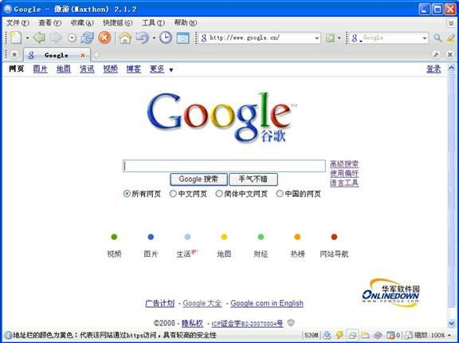
Google搜索引擎界面非常简洁，易于操作。主体部分包括一个长长的搜索框，外加两个搜索按钮、LOGO及搜索分类标签。
第二：基本搜索功能
1：网页搜索
目前Google目录中收录了上百亿网页资料库，这在同类搜索引擎中是首屈一指的。并且这些网站的内容涉猎广泛，无所不有。而Google的默认搜索选项为网页搜索，用户只需要在查询框中输入想要查询的关键字信息，点击“google搜索”按钮，瞬间就可以获得想要查询的资料。
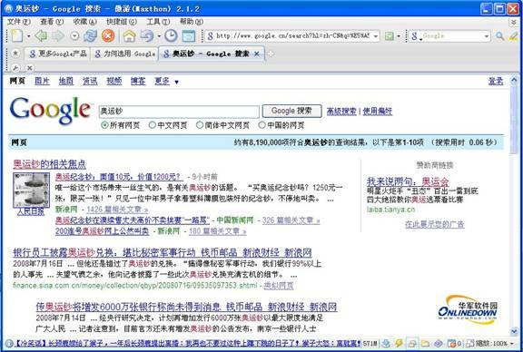
网页搜索结果显示
2：新闻资讯搜索
Google提供了三个大的分类来进行新闻资讯的搜索服务，分别是：
l 财经：商业信息、财经新闻、实时股价和动态图表;
l 资讯：阅读、搜索新闻资讯;
l 快讯：定制实时新闻，直接发至邮箱;
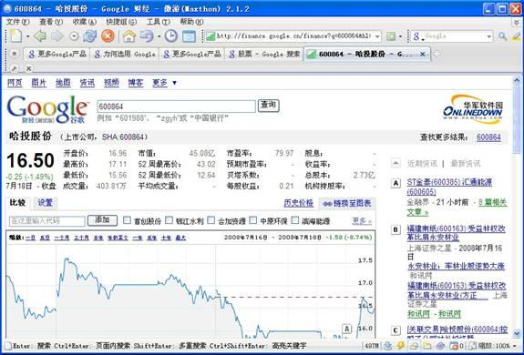
财经搜索：点击首页正下方“财经”标签，再输入要查询的关键字即可进行股票证券类相关财经信息的搜索;
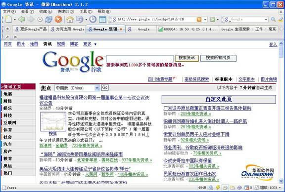
资讯搜索：点击首页左上方“资讯”标签，再输入要查询的关键字即可进行与资讯相关的信息内容搜索;
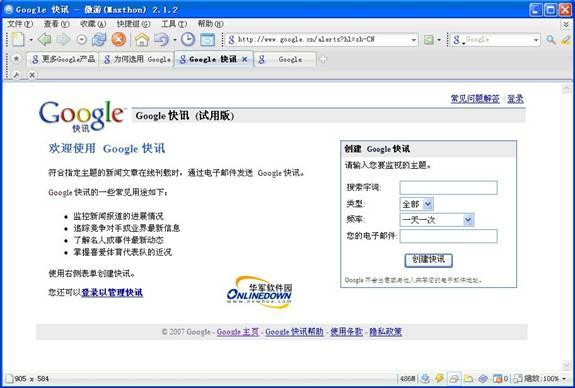
快讯订阅：点击首页左上方“更多”标签，再选择“快讯”即可通过邮箱定制实时新闻;
3：图片搜索
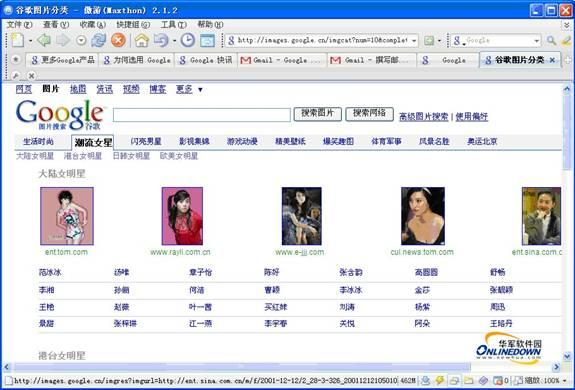
图片搜索：点击首页正下方“图片”标签，再输入要查询的关键字即可进行图片内容的搜索，并且还提供了多种图片分类供用户准确搜索;
4：视频搜索
视频搜索：点击首页正下方“视频”标签，再输入要查询的关键字即可进行视频信息的搜索，并且还提供了多种视频分类供用户选择搜索;
第三：特色搜索功能
对于google而言，还开发了很多极具特色的搜索功能，可以说是只要敢搜，就能实现。
1：生活搜索
Google可以通过生活搜索栏目来搜索您身边的分类生活信息，例如：房屋，餐饮，工作，车票等;
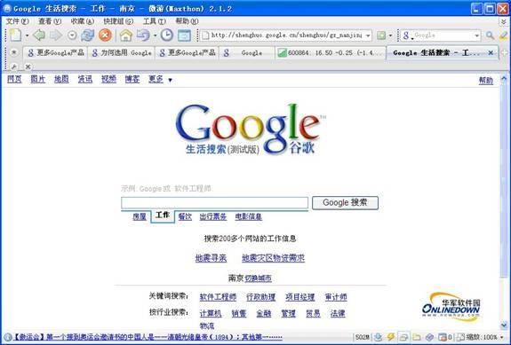
生活搜索：点击首页正下方“生活”标签，再输入要查询的关键字即可进行与生活相关信息内容搜索，如房屋、工作、餐饮、出行票务及电影信息等;
2：地图搜索
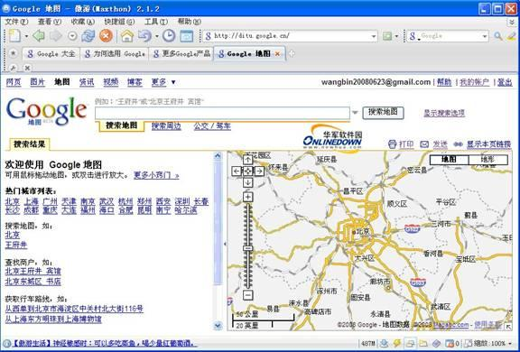
地图搜索：点击首页正下方“地图”标签，再输入要查询的关键字就可查询地址、捜索地区周边及规划路线等。
3：博客搜索
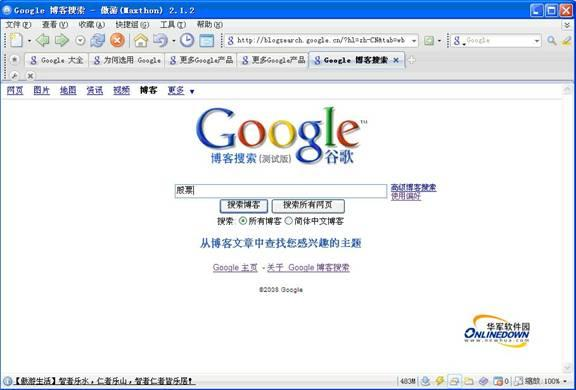
博客搜索：点击首页左上方“博客”标签，再输入要查询的关键字就可从最新的博客文章中查找您感兴趣的主题;
4：大学搜索
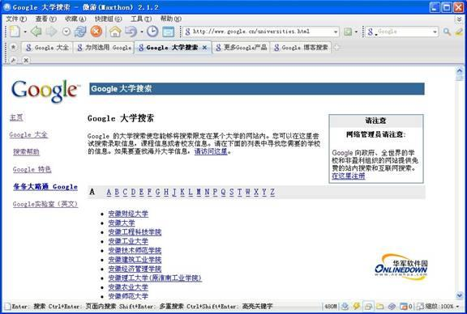
大学搜索：选择首页左上方“更多”标签，再点击“大学搜索”，输入要查询的关键字即可搜索特定大学的网站;
5：图书搜索
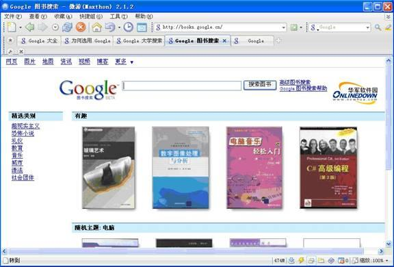
图书搜索：选择首页左上方“更多”标签，再点击“图书搜索”，输入要查询的关键字即搜索图书全文，并发现新书;(此功能可以说广大用户梦寐以求，超级实用)
6：学术搜索
Google学术搜索的每一个搜索结果都代表一组学术研究成果，其中可能包含一篇或多篇相关文章甚至是同一篇文章的多个版本。例如，某项搜索结果可以包含与一项研究成果相关的一组文章，其中有文章的预印版本、学术会议上宣读的版本、期刊上发表的版本以及编入选集的版本等等。将这些文章组合在一起，可以更为准确地衡量研究工作的影响力，并且更好地展现某一领域内的各项研究成果。
同时google还为每一搜索结果都提供了文章标题、作者以及出版信息等编目信息。一组编目数据，都与整组文章相关联，但google会推举最具代表性的一篇。这些编目数据来自于该组文章中的信息以及其他学术著作对这些文章的引用情况。
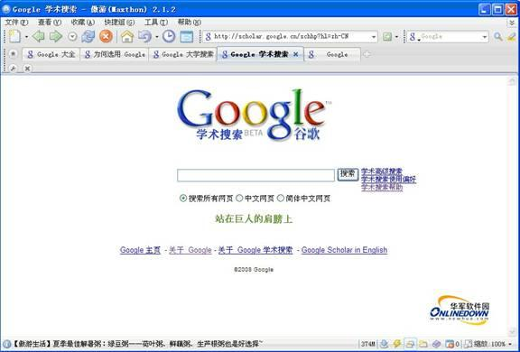
学术搜索：选择首页左上方“更多”标签，再点击“学术搜索”，输入要查询的关键字即可搜索你所需要的专业学术文章;
7：热榜查看
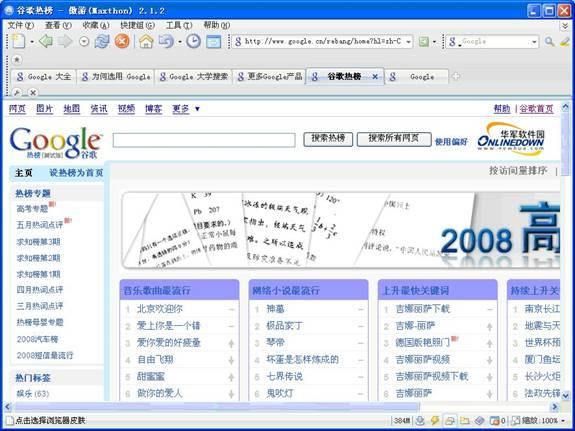
热榜搜索：从首页左上方“更多”标签选择“热榜”，再输入要查询的关键字即可查看
众多热门榜单，掌握最新流行，并且还提供了多种热榜分类供用户准确搜索;
第四：高级搜索功能
Google还开发了一些高级搜索功能，供有特殊需要的用户进行使用;
1：高级搜索
高级搜索相当于一个多条件的组合搜索，它可以根据用户的需要更加灵活的根据用户输入的不同条件组合来进行搜索;
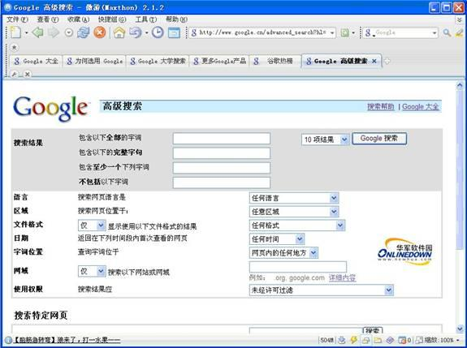
高级搜索：点击首页右侧“高级搜索”标签，再根据需要输入多个要查询的信息即可准确的搜索想要的结果;
2：保留字搜索
Google提供了一种特别的功能，通过google专门定义的一些保留字来执行一些特殊的搜索或功能;
A：通过保留字“filetype”查找非HTML格式的文件
Google已经可以支持13种非HTML文件的搜索。除了PDF文档，Google现在还可以搜索Microsoft Office (doc, ppt, xls, rtf)、Shockwave Flash (swf)、PostScript (ps)和其它类型文档。新的文档类型只要与用户的搜索相关，就会自动显示在搜索结果中。例如：如果您只想查找PDF格式的文件，而不要一般网页，只需搜索“关键词 filetype:pdf”就可以了。
B：通过保留字“site”判断你的网站是否被google索引
要判断您的网站目前是否包含在 Google 索引中，只需添加关键字搜索您的网站网址即可。例如，搜索 site:www.newhua.com 就会返回google收录的关于华军软件园的所有相关结果;
C：通过保留字“link”了解有多少链接指向你的网站
要知道你的网站有多少链接指向它，只需添加关键字搜索您的网站网址即可。例如，搜索 link:www.newhua.com 就会返回所有指向华军网站的链接;
D：通过保留字“define”查看字词或词组的定义
要查看字词或词组的定义，只需键入“define”，接着键入一个空格，然后键入您需要其定义的词。如果 Google 在网络上找到了该字词或词组的定义，则会检索该信息并在搜索结果的顶部显示它们。例如，搜索define:HTML将显示从各种在线来源收集到的“HTML”定义的列表。
第五：另类功能
Google还提供了很多另类功能作为搜索引擎的辅助和加强。
1：网站导航
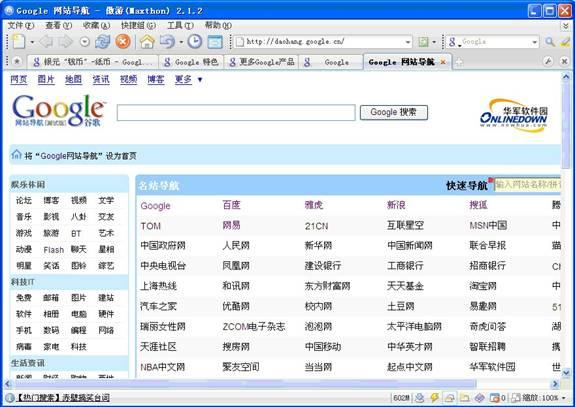
网站导航：点击首页正下方“网站导航”标签，即可进入google网站导航页面;
2：网页目录
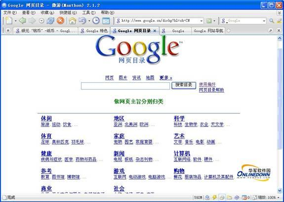
网页目录：通过它可以按分类主题浏览互联网，选择首页左上方“更多”标签，再点击“网页目录”，即可进入google网页目录页面;
3：即时翻译
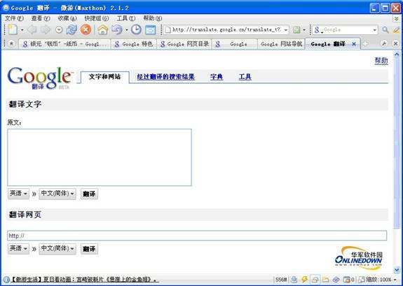
即时翻译：点击首页正下方“翻译”标签，即可在线翻译外文段落、网页及搜索结果等;
4：搜索窍门
Google还提供了一些搜索小窍门来更好的方便用户的使用。主要包括计算器、天气查询、股票查询、手机号码、邮政编号、货币转换等;
5：网站管理员工具
Google提供了包括网站管理员工具在内的多种功能对网站进行抓取和索引编制的统计、诊断和管理，还包括Sitemap 提交和报告。Google 的免费网站管理员工具可以轻松地让您的网站更便于 Google 处理。这些工具可让您知道 Google 对您网站的看法，帮助您诊断问题，并让您与 Google 共享信息以提高您的网站在我们搜索结果中的展示率。
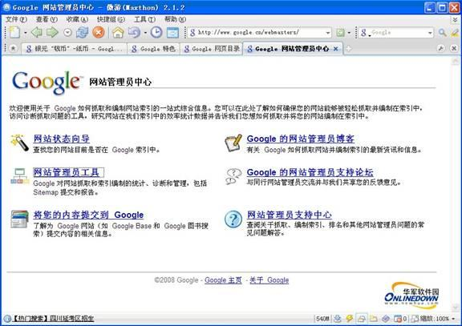
网站管理：点击首页正下方“google大全”标签，再点击“网站网站管理员中心”即可;
总结：
总的来说，google不愧为当今最强大的搜索引擎，其简洁的界面、简单的操作、快速的查询速度、全面、准确、公正的搜索结果，让你不得不叹服。